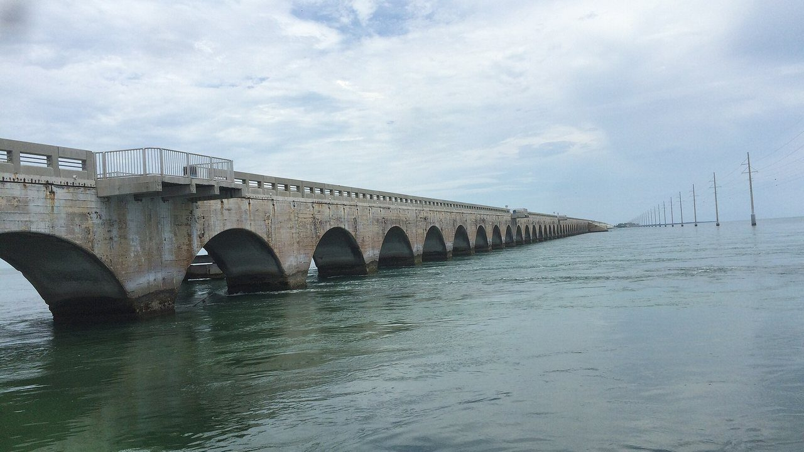

Race, Overseas Highway

Behind
Best +0:01
371W
Target 418 W-47 W
- Cadence
- 87rpm
- Heart
- 140bpm
- Speed
- 26.5km/h
Recover3 of 20
1:29
Next: · 0:30 at level 14
+0.0%
5 m climbed
1.51 km
13
Resistance / 32
Solo races your best-time ghost: position reads Ahead or Behind, and solo alone gets a Pause button. Frozen at 4:01.